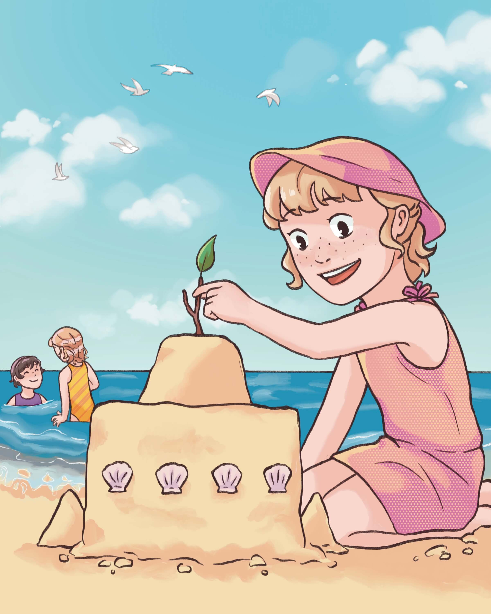

This page is dedicated to my current book illustration commission project for a woman who wrote a book of stories about her growing up in the 60s. It’s been really nice to read about her life as I’ve worked on this project, and see how it connects to life today. She plans on printing this book and making enough copies to give to her children and grandchildren as gifts, which has motivated me to make my illustrations special for her. Unlike other commission projects I’ve worked on, I have had a lot of freedom in the creative aspects of this project, with little directions from my client. I was provided with example images, but much of the subject matter involves some research, which has been fun! I have been focusing more on bubbly, exciting colors and poses, trying to add a bit of maturity to my illustrations compared to other projects I’ve done.

This drawing shows my client as a young girl dancing in her petticoat. Like my illustrations for I Love You My Boy, I wanted to put more emphasis on the character rather than the background. This project is much different from my usual style, but I love that it gives me the freedom to break the rules of regular anatomy and mobility just a bit.

I think that holiday traditions are always so fun to learn about, so I'm glad this drawing gave me the opportunity to learn about Christmas traditions from another time and place. Again, I used a more abstract background to put emphasis on the Christmas tree that was so well described in the story.
This drawing was actually the first I did for this project. I made it as a sample image to show my client, and luckily she loved it! I was trying out a style different from others I have done in the past, and I'm glad that this drawing was helpful for my client.

To be honest, I am not much of an animal artist. I much prefer to draw human figures over animals, so being tasked with drawing the family dog was a bit of a struggle! I can copy a photo of an animal, but trying to stylize it in a way that matched the rest of the illustrations was difficult. With some effort, I think I pulled it off!

This was another challenging piece, while also being one of the more fun pieces I have done for this project. My client's father was a pilot and had a small airplane that she would often get rides in. I was given photos of the plane, and because the figures were so small I got to focus more on the plane and the sky! I love to draw clouds.
This is likely my favorite drawing for this project so far. I love bright colors and sunny days, so getting the chance to draw a fun day at the beach was a treat for me. I drew this a little later in the process, so this piece also let me discover more fully what this project's style would be.

My client visited the 1964 World's Fair, but because she was from California she spent most of the time on a road trip with her family. As someone that has spent countless hours in the car on road trips, I tried to capture the feeling of wind and speed that you just can't get anywhere else.